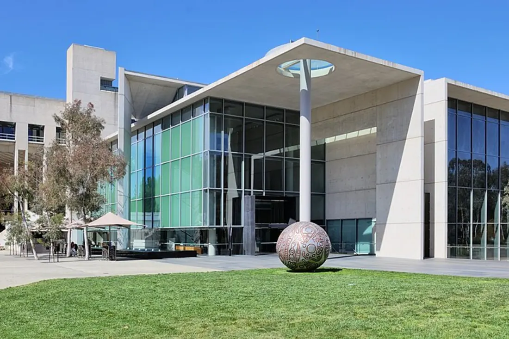

Национальная галерея Австралии
Канберра, Австралия
Основана в 1967 году. Хранит более 166 000 произведений искусства — от австралийского абстракционизма до произведений коренных народов. Здание галереи — архитектурный шедевр на берегу озера.
Сайт музея